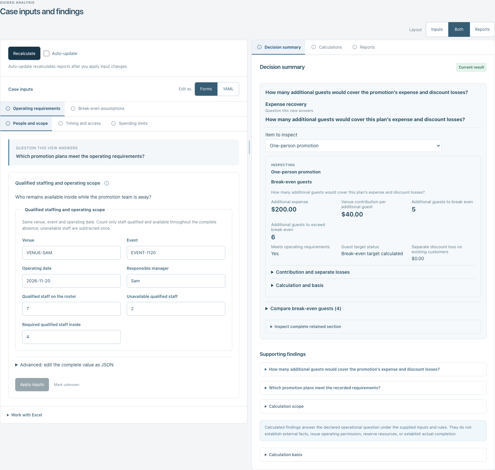

It is 7:30 p.m. Alex manages a gentlemen’s club, and the room is quieter than he wants. A nearby event will finish soon. He can commit up to $400 of additional promotion spending, but the useful window for reaching those customers is closing.
Alex cares about profit. The floor team wants people inside to maintain customer service; promoters want people assigned to outreach, with a clear assignment and fair credit. Alex needs to reconcile those competing demands before deciding what to commit.
A staff callout means a scheduled employee reports that they cannot work their shift. Two callouts reduce Alex’s seven-person roster to five available staff. At least four must remain inside during the planned absence.
An arrangement is one complete assignment: the people, location, outreach window, offer, transport and permissions that must work together. Alex has four mutually exclusive alternatives, including making no further push. Each price includes the additional labor, transport, materials and commissions caused by that assignment.
Alex, the club and all figures are fictional. The working street-team analysis checks recorded requirements and calculates conditional guest thresholds. The screenshot shows its calculated Decision summary. Sources and scope.
In Marketplace, install or update Venue operations, then choose Start analysis for Plan a street-team deployment. The shared walkthrough shows the five-staff inputs used here.
Compare the basis for each deployment.
Alex puts the four complete assignments against the same facts: 5 qualified staff available, at least 4 required inside throughout 7:45–9 p.m., and a $400 additional-spending limit. The promotion options share the confirmed outreach point and window. Each column makes a different part of the decision visible.
The financial columns use contribution: what the venue retains from an additional guest after the offer and relevant variable costs. They show the response needed to cover the deployment’s expense. These figures assume no separate discount loss on existing customers; lost sales from reduced service have not been estimated.
Read across each row. Scroll sideways on smaller screens; deployment names stay visible.
| Proposed deployment | Floor team | Promotions | Alex | Recorded operating finding | |
|---|---|---|---|---|---|
| Keep at least 4 inside | People assigned to outreach | Additional expense | Additional guests to cover expense | ||
| Make no further push | Meets minimum 5 staff inside | 0people assigned | $0 | Baseline No new expense to recover | Meets requirements |
| One-person standard push | Meets minimum 4 staff inside | 1person assigned | $200 | 5 additional guestsat $40 contribution each | Meets requirements |
| Two-person standard push | Below minimum 3 staff inside | 2people assigned | $400 | 10 additional guestsat $40 contribution each | Blocked Insufficient floor coverage |
| Two-person discount push | Below minimum 3 staff inside | 2people assigned | $400 | 16 additional guestsat $25 contribution each | Blocked Insufficient floor coverage |
Customer response unknown Profit not established
The checks apply to recorded requirements. Outreach counts describe assigned capacity; the guest thresholds describe required response, not expected attendance. Both two-person offers have the same staffing failure, while their offers produce different contribution and guest thresholds. A financial hurdle remains conditional even when the operating plan is blocked. Meeting the operating requirements leaves Alex’s choice and specific authorization separate.
Floor team: preserve service capacity.
Both two-person assignments leave three inside and fail the minimum. Sending one leaves four; holding leaves five.
Keeping more people inside provides more service capacity. The coverage check does not establish service quality or the value of sales that might otherwise be missed.
Promotions: put people on outreach.
Two people would provide more outreach capacity, but both two-person assignments are blocked. Sending one preserves some outreach while meeting the floor minimum; holding assigns no one outside.
Each assignment specifies its outreach headcount. Whether those people attract enough genuinely additional guests remains unanswered.
One assignment has to reconcile both teams’ needs.
Both teams report to Alex and influence his decision. Alex reports to the owner and makes the deployment decision within his delegated operating and spending limits. Extra outreach uses people who could otherwise serve customers inside. Its effect on attendance and sales remains unknown.

We classify this as a shared-staff allocation problem. Its bounded deployment decision pattern is to compare complete assignments, establish which meet the requirements, then make a commitment. The pattern can be reused with different facts and requirements.
Hermod Labs built the workflow used here. We selected supporting reasoning patterns to check the operating requirements together and calculate conditional expense-recovery thresholds, then authored the inputs, calculation sequence and focused reports. Alex checks the facts with his team and makes the commitment through the venue’s normal process.
Alex makes a decision he can explain.
In the five-staff, on-time-event situation, Alex chooses the one-person standard-offer deployment. Four remain inside. The proposed schedule and location fit. He understands that five genuinely additional guests would cover its $200 expense.
The five-guest threshold does not justify the expense for him. Alex makes the management judgment that he is willing to risk $200 on the remaining event opportunity while preserving floor coverage. He could instead hold. The calculation makes the exposure and operating conditions explicit; it supplies no evidence that five additional guests will arrive.


In Both layout, Alex keeps Operating requirements → People and scope beside the Decision summary. He applies the two callouts, then chooses Calculate above the input panel. The input and report tabs work independently. Forms shows the authored fields; YAML exposes the complete saved case. Switching views applies no changes, and inspecting another deployment does not commit the team.
Alex communicates the chosen assignment and gives the necessary authorization through the venue’s usual process, identifying the venue, night, $200 limit and valid time window. The calculation is not that authorization. He sets an 8:45 p.m. operating check for current conditions and any further spending decision. Admissions and retained spending take longer to observe.
| Part of the brief | Alex’s decision or open question | How Decision Lab helped |
|---|---|---|
| Operating basis | Check the current staffing, timing, access and spending records. | Calculated which complete assignments meet those supplied requirements. |
| Chosen assignment | Commit to the one-person standard-offer deployment. | Made the workable alternatives and financial exposure visible; Alex makes and communicates the choice. |
| Specific authorization | Authorize this assignment for the venue, night, $200 limit and valid time window. | Checked the recorded spending delegation. The venue separately authorizes and releases the assignment. |
| Open business question | Will enough genuinely additional guests attend to recover the expense? | Made the five-guest hurdle explicit while leaving the response and spending judgment unresolved by calculation. |
Responsible people still decide when to release the team and carry out the assignment.
Follow the decision as its context changes.
Alex can now explain what he is committing, which conditions support it and what response would cover the expense. His decision still depends on those conditions.
- Another employee calls out before departure. Can the team still go? The sequel also examines a separate change to the event’s timing.
- What would justify the next $200? Explore financial sensitivity and the evidence needed before repeating the expense.
- Open the analysis and follow Alex’s worked case. Shared setup and optional authoring references accompany the series.